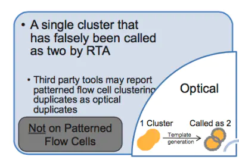

转载自简书：****讨厌又迷人的reads去重复****
在NGS分析入门阶段，我们不需要考虑太多的细节，只用知道一个分析的大致流程并完整跑下来即可。太多的细节，只会让我们对于分析产生莫须有的恐惧，因此一些“无关紧要“细节就被我们刻意的忽略了……
但是随着我们对于测序数据的认识不断加深，我们要考虑的小细节便越来越多。其中，是否去除PCR重复就是一个很值得思考的问题。
关键点：
- RNA-seq一般不去重复、ChIP-seq一般去重复、call SNP一般去重复
- 万事无绝对，还需参考起始量和PCR扩增数判断是否去重复。reads mapping覆盖均匀度可以判断是否需要去重复。
- PCR去重工具首选Picard
- 根源上解决去重复问题：起始量高，循环数少，reads能长不短，能双端不单端
PCR重复的危害
理论上来讲，不同的序列在进行PCR扩增时，扩增的倍数应该是相同的。但是由于聚合酶的偏好性，PCR扩增次数过多的情况下，会导致一些序列持续扩增，而另一些序列扩增到一定程度后便不再进行，也就是我们常说的PCR偏好性。
这种情况对于定量分析（如ChIP-seq），会造成严重的影响。此外，PCR扩增循环数过多，会出现一些扩增偏差，进而影响一些突变识别（比如call SNP)的置信度。
因此，在一些NGS分析流程中需要考虑去除PCR重复。但是，这并不代表可以无脑去除，你要真这样做了，我这篇文章也就没啥意义了~
常用的去重工具
测序所得到的reads是由于超声波或者酶切断裂得到的，因此这些reads比对到基因组上的位置是完全随机的。那么两个reads比对到相同位置的概率是非常低的。如果两个reads比对情况相同或者极其相似，则很有可能是由于PCR重复所导致的。而我们常用的去重工具主要也是遵循这一思想。
samtools rmdup
samtools的大名，基本上是无人不知，无人不晓。而这个工具其中有一个rmdup方法，可以帮助我们去除重复。虽然我们不需要了解该工具的具体代码实现，但是了解其核心思想将有助于我们深刻认识这个玩意。
如果多个reads具有相同的比对位置时，rmdup将它们标记为duplicates，然后去除重复，通常只保留第一个识别到的reads。
该方法对于以下两种情况，有很好的去除效果：
- 一些reads由于测序错误导致其不完全相同
- 比对错误导致不同的序列比对到相同的位置（可能性不大）
该方法的缺点：由于samtools去重只考虑reads比对上的起始终止位置，不考虑比对情况，这种去重有时会导致测序信息的丢失。
Picard
这是另一个鼎鼎大名的工具，该工具的MarkDuplicates方法也可以识别duplicates。但是与samtools不同的是，该工具仅仅是对duplicates做一个标记，只在需要的时候对reads进行去重。而samtools的rmdup则是直接将其识别出来的重复reads去掉。
该工具的另一个不同之处在于它不仅考虑reads的比对位置，还会考虑其中的插入错配等情况（即会利用sam/bam文件中的CIGAR值），甚至reads的tail，lane以及flowcell。Picard主要考虑reads的5’端的比对位置，一个每个reads比对上的方向。
因此我们可以从一定程度上认为，5’端的位置，方向，以及碱基比对情况相同，Picard就将这些reads中碱基比对值Q>15的看作是best pair而其他的reads则当作是duplicate reads。甚至当reads的长度不同时，Picard依然利用上述原理进行去重。
对Picard来说，reads的5’端信息更为重要.若duplicates是PCR重复，那么它们的序列不一定完全相同。但是由于PCR扩增时，酶的前进方向是5’->3’方向，PCR重复序列中5’端的部分相似的可能性更高。
如果说非要推荐一个去重软件，那我就只能无脑吹一波Picard了。如果不需要考虑太多，那么samtools的去重更加方便
如何判断是否需要去除重复？
那么，既然不能无脑去除，那么我们应该根据什么标准去判断呢？
image.png
首先我们可以检查FastQC中的原始数据，该数据大致说明reads中的重复水平。虽然该工具仅计入前200,000个序列，但是我们仍然可以借此大致了解其数量级。
我们之前有说到，两个reads比对到相同位置的概率是非常低的，但是概率低不代表就不会发生。因此当我们准备去除重复时，我们需要清楚这些数据究竟是什么？
在illumina测序中，通常有两种类型的重复，分别是光学重复和PCR重复，PCR重复就不用多说了，就是在建库过程中PCR扩增导致的重复。那么什么是光学重复呢？具体如下图所示，它是由于illumina测序时照相机错误的的将一个簇识别为两个簇（多个），这就会导致产生完全一样的reads。该重复可以利用tail的坐标进行去除（此处需要回忆一下Picard的去重原理）。

当我们做RNA-seq时，我们所得到的reads覆盖度通常是不均匀的（由于不同的基因表达水平不同），如果我们不加考虑的直接remove duplicate，将会导致许多重要信息的丢失。
samtools的作者李恒提供了一个公式用于计算错误去除率：0.28 * m / s / L（其中m是reads的数量，s是插入片段大小分布的标准偏差，L是基因组的长度；插入的片段大小分布越集中（s越小）不幸地增加了错误的重复数据删除率）。如果经验去重率高于0.28 * m / s / L，则这些序列是真的PCR重复
那么RNA-seq是否需要去除重复呢？答案是具体情况具体看看待咯~
好吧，这句话确实像是废话，但是这真的是实话欸……
总结一下，若起始量很低，PCR扩增次数很多，那么则需要去除PCR重复。因此：
- RNA-seq由于其建库起始量一般都很高所以不需要去除重复，而且RNA-seq数据中经常会出现某些基因的表达量十分高，这就导致这些基因打断的reads的比对情况有很大概率是一致的。
- 而ChIP-seq中，由于起始量不高，且没有那种富集程度很高的位点，因此通常需要考虑去除PCR重复。
- 至于call SNP，起始量一般都高（因为要保证测序深度），此外由于PCR扩增会导致一些序列复制错误，这将严重影响SNP位点识别的置信度。因此一般需要去重复。
当然万事无绝对，还是需要根据起始量和扩增数进行判断，但是如果你说我还是觉得不太安心怎么办，没关系，我还有一个小技巧可以偷偷告诉你。虽然我自己由于时间问题没有测试过，但是这个方法听起来很是蛮靠谱的。
该方法是由biostar的创始人在其论坛中给出的：利用reads mapping的均匀程度判断是否具有重复。若富集位点周围的reads均匀覆盖，那么没有重复；若富集位点周围覆盖度不均匀，某些区域猛然升高，那么很有可能需要进行PCR去重复
不仅治标也要治本
上面给的解决办法，都是治标不治本，那么能不能从根源上减少这种重复带来的影响呢？这个必须有~
- 起始量很多时，不需要去重复
- 扩增数很少时，15个cycle以内，不需要去重复
- 双端测序由于其两个reads的位置矫正，有助于去除PCR重复
- reads长度越长，越容易识别真正的PCR重复
参考
- http://seqanswers.com/forums/showthread.php?t=6854
- http://seqanswers.com/forums/showthread.php?t=6543
- http://seqanswers.com/forums/showthread.php?t=5424
- https://www.biostars.org/p/55648
- https://www.biostars.org/p/47229